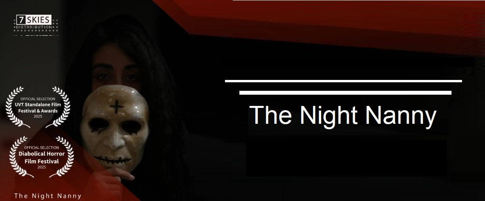

فیلم کوتاه ترسناک «The Night Nanny» به کارگردانی امین نیکنژاد، پس از حضور در ۱۵ جشنواره تخصصی سینمای وحشت، اکنون شانزدهمین و هفدهمین حضور بینالمللی خود را در ایالات متحده آمریکا ثبت کرده است؛ رکوردی که این فیلم را در میان پرحضورترین آثار کوتاه ایرانی ژانر وحشت در چرخه اخیر جشنوارههای بینالمللی قرار میدهد.
این فیلم موفق شده است به دهمین دوره Diabolical Horror Film Festival و سومین دوره UVT Standalone Film Festival & Awards (UVTSFFA) راه یابد؛ دو رویداد سینمایی آمریکایی که میزبان آثار مستقل از فیلمسازان سراسر جهان هستند.
Diabolical Horror Film Festival جشنوارهای تخصصی در حوزه سینمای وحشت، دلهره و ژانرهای تاریک است که با تمرکز بر نمایش آثار مستقل، هر سال میزبان فیلمهای کوتاه و بلند ترسناک از کشورهای مختلف بوده و بستری برای معرفی استعدادهای نوظهور این ژانر فراهم میکند. در سوی دیگر، UVT Standalone Film Festival & Awards یک رویداد مستقل مستقر در کالیفرنیاست که بدون محدودیت ژانر به پذیرش آثار میپردازد و با برگزاری نمایشهای آنلاین، اکران حضوری و مراسم پایانی در هالیوود، فرصتی برای معرفی و رقابت فیلمسازان مستقل از سراسر جهان فراهم میکند.
حضور همزمان در دو رویداد آمریکایی، دامنه جغرافیایی پخش «The Night Nanny» را در قاره آمریکا گستردهتر کرده است. تیم مستر شورتفیلم مسیر بینالمللی این فیلم کوتاه ترسناک ایرانی را در همین بخش وبلاگ دنبال خواهد کرد.